TL;DR
This research consist of three parts covering different areas namely developing a custom RPC client, reverse engineering and a bit of cryptography.
When this research started, the objective was actually to find a new way to leverage an old CVE, however digging into the product a new rabbit hole appeared, leading to a new vulnerability.
This part of the research explains intricate parts of Remote Procedure Calls (RPC) in Windows environments and how to develop a custom client.
CVEs:
Background
ManageEngine is a company with around 50 different products ranging from full SIEM solutions to Mobile Device Management systems with 280 000+ customers world-wide. This article will deep-dive into ADAudit Plus, which is a product used for real-time monitoring of Active Directory, Windows file servers and Windows configuration change auditing.
ADAudit can remotely access event logs and other statistics using standard
remote interaction tools available in Windows. However, for comprehensive
visibility and specialized functions on the targeted machines, it is necessary
to install an agent on the audited Windows systems, specifically the
ADAuditPlusAgent.
When this research started, the objective was actually to find a new way to leverage an old CVE, however digging into the product a new rabbit hole appeared, leading to a new vulnerability..
As the old CVE was fixed, the research had to be conducted on an older version of ADAudit, more precisely the version 7050 released December 2021
ManageEngine have a penchant for building applications on top of Tomcat with Java which makes it a good target to practice some source code analysis and reverse engineering. Lets begin digging.
Methodology
For those who are not familiar with Java and decompiling, here is Shelltrail’s methodology:
Find all .jar files you would like to assess and download them to your Unix host. The jar files will most likely be stored in the installation directory of the product that is being assessed.
user@adpen1:~/adaudit/7$ ls -la
total 8036
drwxr-xr-x 2 user user 4096 Dec 1 08:36 .
drwxr-xr-x 5 user user 4096 Dec 1 08:35 ..
-rw-r--r-- 1 user user 997934 Dec 1 08:36 AdventNetADAPClient.jar
-rw-r--r-- 1 user user 12040 Dec 1 08:36 AdventnetADAPFilter.jar
-rw-r--r-- 1 user user 139792 Dec 1 08:36 AdventNetADAPJspClient.jar
-rw-r--r-- 1 user user 4534195 Dec 1 08:36 AdventnetADAPServer.jar
-rw-r--r-- 1 user user 15735 Dec 1 08:36 AdventnetADAPService.jar
-rw-r--r-- 1 user user 68066 Dec 1 08:36 AdventnetADAPStartUp.jar
-rw-r--r-- 1 user user 686147 Dec 1 08:36 AdventNetClientComponents.jar
-rw-r--r-- 1 user user 290027 Dec 1 08:36 AdventNetClientFramework.jar
-rw-r--r-- 1 user user 65094 Dec 1 08:36 AdventNetIdiomsGallery.jar
-rw-r--r-- 1 user user 294662 Dec 1 08:36 AdventNetNPrevalent.jar
-rw-r--r-- 1 user user 104252 Dec 1 08:36 AdventNetRssLibrary.jar
-rw-r--r-- 1 user user 157667 Dec 1 08:36 AdventNetTableComponents.jar
-rw-r--r-- 1 user user 781984 Dec 1 08:36 AdventNetUpdateManagerInstaller.jar
-rw-r--r-- 1 user user 22935 Dec 1 08:36 AdventNetWebClientCore.jar
-rw-r--r-- 1 user user 13413 Dec 1 08:36 AdventNetWebClientRangeNavigator.jar
-rw-r--r-- 1 user user 13809 Dec 1 08:36 AdventNetWebClientTree.jar
Jar-files is an acronym for Java Archive. It is a file format based on the popular ZIP file format and is used for archiving many files into one.
So yes, it is possible to extract the jar file with a zip tool and retrieve the content:
user@adpen1:~/adaudit/7$ 7z l AdventNetADAPClient.jar
[...]
2021-12-30 21:37:22 D.... 0 0 com/adventnet/sym/adsm/common/webclient/tracker
2021-12-30 21:37:22 D.... 0 0 com/adventnet/sym/adsm/common/webclient/tree
2021-12-30 21:37:22 D.... 0 0 com/adventnet/sym/adsm/common/webclient/util
2021-12-30 21:37:22 ..... 3836 1804 com/adventnet/sym/adsm/auditing/webclient/compliance/ComplianceDEReportHandler.class
2021-12-30 21:37:22 ..... 43842 17323 com/adventnet/sym/adsm/auditing/webclient/compliance/ComplianceReportHandler.class
2021-12-30 21:37:22 ..... 1857 764 com/adventnet/sym/adsm/auditing/webclient/ember/api/ADAPAPIServlet.class
2021-12-30 21:37:22 ..... 1884 774 com/adventnet/sym/adsm/auditing/webclient/ember/api/ADAPAgentAPIServlet.class
[...]
This will give you the class files stored in the Jar, however class files are Java code compiled into Java bytecode which is interpreted by Java Virtual Machine (JVM) and therefore is not human readable.
jd-gui is a good tool for decompiling individual Jar files into a human readable format for analysis but it does not scale well when you have many files.
To automate this process, jd-cli can be used to unzip and decompile the Jar files - making them searchable and viewable.
user@adpen1:~/adaudit/7$ jd-cli *.jar
09:51:11.097 INFO com.github.kwart.jd.cli.Main - Decompiling AdventNetADAPClient.jar
09:51:11.107 INFO com.github.kwart.jd.output.ZipOutput - ZIP file output will be initialized - AdventNetADAPClient.src.jar
09:51:14.930 INFO com.github.kwart.jd.output.ZipOutput - Finished with 129 class file(s) and 1 resource file(s) written.
[...]
user@adpen1:~/adaudit/7$ mkdir src
user@adpen1:~/adaudit/7$ cd src
user@adpen1:~/adaudit/7/src$ find ../ -name '*src.jar' -exec unzip -o {} \;
Archive: ../AdventNetUpdateManagerInstaller.src.jar
inflating: META-INF/MANIFEST.MF
inflating: com/adventnet/tools/update/installer/images/context_help.png
inflating: com/adventnet/tools/update/installer/images/context_install.png
inflating: com/adventnet/tools/update/installer/images/error.png
inflating: com/adventnet/tools/update/installer/images/help_icon.png
inflating: com/adventnet/tools/update/installer/images/import.png
inflating: com/adventnet/tools/update/installer/images/info.png
[...]
From this point, the analysis of the source code could be initiated.
Discovery
What shifted the focus from the initial target was the interest in the functionality
to interact and fetch information from Windows machines with the ADAuditPlusAgent
installed. The ADAuditPlusAgent has many features which can be activated
from the ADAudit server, one of these are a so called
SessionMonitoring feature. This feature starts a process that takes
screenshots at a set interval, and sends them to the central server.
This allows the server to create videos of configuration state changes and
connect them with events. As an example it is possible for the low privileged
user in the agent machine can get a video session of an administrator deleting
a critical configuration file.
Sounds like a fun feature to review, doesn’t it?
When enabling the SessionMonitoring feature from the ADAudit server while analysing all
the traffic sent to the agent with wireshark an RPC interaction via named pipes
was discovered.
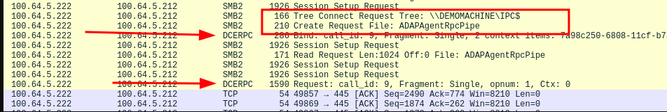
Hmm interesting! Lets first dwelve into the history of DCE RPC.
DCE RPC / MSRPC
DCE RPC or Distributed Computing Environment Remote Procedure Call is a protocol used in client to server interactions and is general term in computer science and not something only available on Windows Systems.
Microsoft however wanted their own flavour and developed MSRPC (Microsoft Remote Procedure Call) with the introduction of Windows NT, first released in 1993. RPC is an old protocol but it is the foundation of how inter-computer communication works in Windows environments.
So basically how RPC works is that a Interface Definition Language (IDL) is defined that exposes procedures to clients. The IDL also defines how the client should interact with parameters such as a UUID, version and optionally a handle.
[
uuid(7a98c250-6808-11cf-b73b-00aa00b677a7),
version(1.0),
implicit_handle(handle_t ImplicitHandle)
]
interface hello
{
void HelloProc([in, string] unsigned char * pszString);
void Shutdown(void);
}
The first part which is called the IDL header. This header should contain a UUID to not conflict with other RPC interfaces, a version number, and can utilize three different handles; explicit, implicit and automatic.
The second part, also known as the IDL body states the procedures that the client can interact with.
When connecting to the server a binding to the RPC interface must be initialized. This
can be either ncacn_ip_tcp, ncalrpc or ncacn_np
ncacn_ip_tcp uses plain TCP communication to interact with the server. For this binding to work the RPC server must be configured with a static TCP port that is reachable. This does not require authentication in order to establish a connection to the RPC, leaving all authentication responsibility to the exposed procedure on the server. The initial connection to the RPC is done over TCP/135.
Example: ncacn_ip_tcp:100.64.5.212[49670]
ncalrpc is used for local RPC interactions which should not be exposed over the network.
Example: ncalrpc:[LRPC-dfdb2238aff756a07c]
ncacn_np Lets the client and server negotiate TCP port for interaction and the negotiation occurs over SMB. Meaning this type of binding requires username and password to connect to SMB, if anonymous sessions are not enabled.
Example: ncacn_np:100.64.5.212[\pipe\hello]
Exploitation
What we know up to this part is actually only that the ADAudit server is using
RPC to interact with the Agents over a named pipe called ADAPAgentRpcPipe as
seen in the wirehark screenshot.
What we now need to do is:
- Create a valid IDL structure
- Brew a large can of coffee
- Build an RPC client
- Guess a lot
- Create input data that will be marshalled into a valid stub that servers RPC interface will act on.
Lets begin with the IDL structure. RpcView have everything we need to accomplish this step as the tool can decompile the IDL structure from the RPC interface. This tool should be executed on the server exposing the RPC interface:
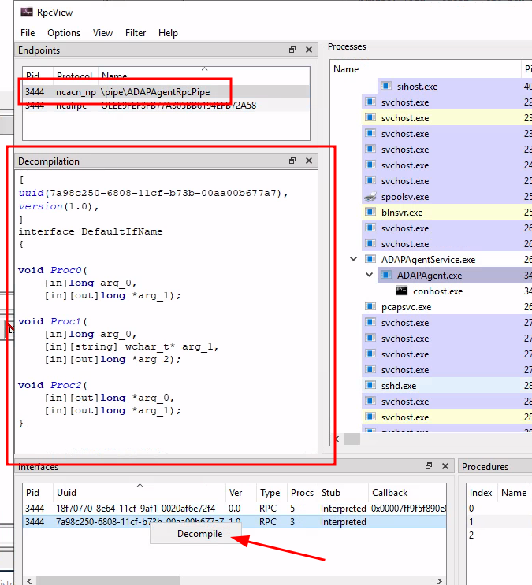
Get the Visual Studio 2022 installer from https://visualstudio.microsoft.com/downloads/
Choose to install Desktop developments with C++
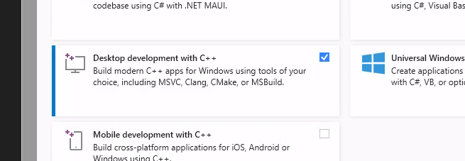
Make sure Windows SDK is selected as this packages contains the necessary components to craft the RPC client:
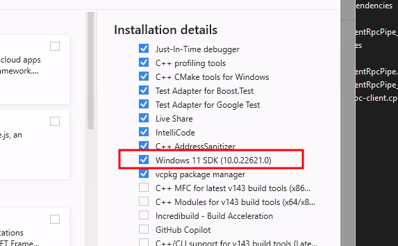
Fire up a Visual Studio 2022 and initiate a C++ console app project.
Start by changing the project build options to Release and x64 in order
to not require debug runtime libraries when running the compiled binary outside
of the build machine.
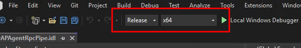
Create a file named ADAPAgentRpcPipe.idl in the Source Files structure in Visual Studio:
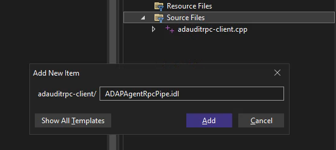
Copy the decompiled IDL structure which was exported by RpcView to the newly created file.
[
uuid(7a98c250-6808-11cf-b73b-00aa00b677a7),
version(1.0),
]
interface DefaultIfName
{
void Proc0(
[in]long arg_0,
[in][out]long* arg_1);
void Proc1(
[in]long arg_0,
[in][string] wchar_t* arg_1,
[in][out]long* arg_2);
void Proc2(
[in][out]long* arg_0,
[in][out]long* arg_1);
}
Right click the file in Visual Studio and choose compile -
Visual Studio will use midl.exe to compile the IDL file into C code which will handle the
appropriate marshalling operations.
Marshalling is the process of converting data objects and parameters into a state that can be transmitted over a network. This is crucial when transporting complex data structures.
The data sent to the RPC server when pushing commands to the
ManageEngine ADAudit Agent can actually be viewed
in the DCERPC request in the Stub data section. An exception to this
visibility is if the server defaults to SMB3, then event the Stub data section
is encrypted. In the following image the server is using SMB2:
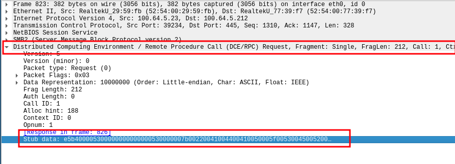
Back to the project; after compiling of the IDL structure there should now be three new files in the visual studio project folder:
ADAPAgentRpcPipe_c.c: _c for clientADAPAgentRpcPipe_h.h: _h for headerADAPAgentRpcPipe_s.c: _s for server
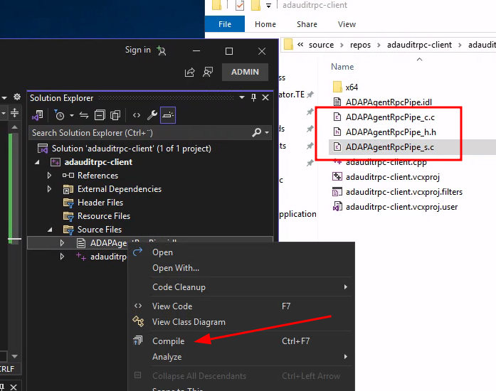
- Create a valid IDL structure. Done.
Next up, coffee:
- Brew a large can of coffee
With the IDL structure complete and coffee ready the next step is to build the
RPC client. Microsoft provides example code
specifying how to build an RPC client and server application.
The public code will be used as a skeleton for our ADAuditRPC-client so it is
copied to a file named adauditrpc-client.cpp under Source Files in
Visual Studio (use any existing main cpp file or create a new one)
Example code:
/* file: helloc.c */
#include <stdlib.h>
#include <stdio.h>
#include <ctype.h>
#include "hello.h"
#include <windows.h>
void main()
{
RPC_STATUS status;
unsigned char * pszUuid = NULL;
unsigned char * pszProtocolSequence = "ncacn_np";
unsigned char * pszNetworkAddress = NULL;
unsigned char * pszEndpoint = "\\pipe\\hello";
unsigned char * pszOptions = NULL;
unsigned char * pszStringBinding = NULL;
unsigned char * pszString = "hello, world";
unsigned long ulCode;
status = RpcStringBindingCompose(pszUuid,
pszProtocolSequence,
pszNetworkAddress,
pszEndpoint,
pszOptions,
&pszStringBinding);
if (status) exit(status);
status = RpcBindingFromStringBinding(pszStringBinding, &hello_ClientIfHandle);
if (status) exit(status);
RpcTryExcept
{
HelloProc(pszString);
Shutdown();
}
RpcExcept(1)
{
ulCode = RpcExceptionCode();
printf("Runtime reported exception 0x%lx = %ld\n", ulCode, ulCode);
}
RpcEndExcept
status = RpcStringFree(&pszStringBinding);
if (status) exit(status);
status = RpcBindingFree(&hello_IfHandle);
if (status) exit(status);
exit(0);
}
/******************************************************/
/* MIDL allocate and free */
/******************************************************/
void __RPC_FAR * __RPC_USER midl_user_allocate(size_t len)
{
return(malloc(len));
}
void __RPC_USER midl_user_free(void __RPC_FAR * ptr)
{
free(ptr);
}
The first modification we need to do is to replace the filename on line 1 and
line 5 #include "hello.h" to
#include "ADAPAgentRpcPipe_h.h" as we have compiled our own header file
created via the IDL file. In addition to we add a line with #pragma comment(lib, rpcrt4.lib") to
be able to create RPC bindings.
The result:
- /* file: helloc.c */
#include <stdlib.h>
#include <stdio.h>
#include <ctype.h>
- #include "hello.h"
#include <windows.h>
+ /* file: adauditrpc-client.cpp */
#include <stdlib.h>
#include <stdio.h>
#include <ctype.h>
+ #include "ADAPAgentRpcPipe_h.h"
#include <windows.h>
+ #pragma comment(lib, "rpcrt4.lib")
Next step is to replace some data types and initiate variables to be used for the RPC bindings. These can be found on lines 12-19.
RPC_STATUS status;
- unsigned char * pszUuid = NULL;
- unsigned char * pszProtocolSequence = "ncacn_np";
- unsigned char * pszNetworkAddress = NULL;
- unsigned char * pszEndpoint = "\\pipe\\hello";
- unsigned char * pszOptions = NULL;
- unsigned char * pszStringBinding = NULL;
- unsigned char * pszString = "hello, world";
unsigned long ulCode;
RPC_STATUS status;
+ RPC_WSTR pszUuid = NULL;
+ RPC_WSTR pszProtocolSequence = (RPC_WSTR)L"ncacn_np";
+ RPC_WSTR pszNetworkAddress = (RPC_WSTR)L"100.64.5.212"; // Target ADAudit agent
+ RPC_WSTR pszEndpoint = (RPC_WSTR)L"\\pipe\\ADAPAgentRpcPipe";
+ RPC_WSTR pszOptions = NULL;
+ RPC_WSTR pszStringBinding = NULL;
+ //unsigned char * pszString = "hello, world";
unsigned long ulCode;
At line 29 we replace:
- status = RpcBindingFromStringBinding(pszStringBinding, &hello_ClientIfHandle);
+ status = RpcBindingFromStringBinding(pszStringBinding, &DefaultIfName_v1_0_c_ifspec);
And line 49:
- status = RpcBindingFree(&hello_IfHandle);
+ status = RpcBindingFree(&DefaultIfName_v1_0_c_ifspec);
The &DefaultIfName_v1_0_c_ifspec parameter is defined in the header file
from our IDL compilation as we named our RPC interface DefaultIfName
(Line 5 in ADAPAgentRpcPipe.idl).
The last step would be to call the correct procedures as stated in our IDL:
Proc0, Proc1 or Proc2. At this point in time we have no clue what the
procedures do when they are triggered on the agent side but we aim to find out.
At line 34 and 35 Microsoft’s example code calls the example procedures
HelloProc() and Shutdown(). We will continue with replacing these with Proc0
and provide valid arguments to test our first ADAuditAgentRpcPipe procedure.
By reviewing our IDL structure for Proc0 we also know that the
procedure takes two argument:
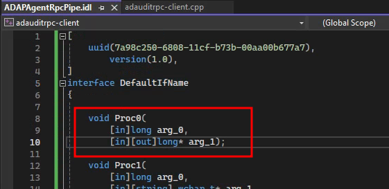
arg_0 with datatype long which is an integer datatype
and arg_1 with datatype long* which is a pointer to a long.
arg_1 is defined with [in][out] meaning that this may be output from
the application.
As our IDL header structure lacks an implicit handle we need to provide a
handle (&DefaultIfName_v1_0_c_ifspec) to Proc0, we’ll also instantiate
variables for arg_0 and arg_1:
- RpcTryExcept
- {
- HelloProc(pszString);
- Shutdown();
- }
+ long arg_0 = 0;
+ long arg1_pointer;
+ long* arg_1 = &arg1_pointer;
+ RpcTryExcept
+ {
+ Proc0(DefaultIfName_v1_0_c_ifspec, arg_0, arg_1);
+ }
In order for Visual Studio to reference DefaultIfName_v1_0_c_ifspec, we need to include the
ADAPAgentRpcPipe_c.c file in our list of source files:
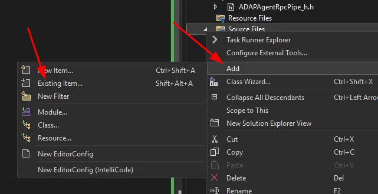
Also add the ADAPAgentRpcPipe_h.h file under Header Files.
The final project structure in Visual Studio should now look loo this:
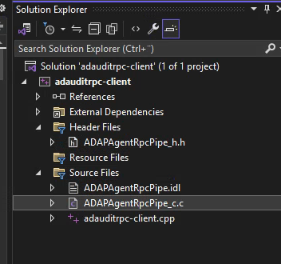
And if every step is followed correctly the project should now build. Voilà…
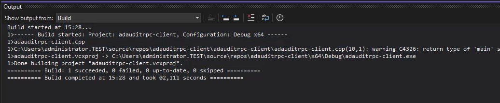
But does it actually work?
Running the binary from the command line does not print any output unless an exception is thrown but if the network traffic is analyzed with Wireshark we can see similar traffic to when the RPC interaction was triggered by the ADAudit web application.
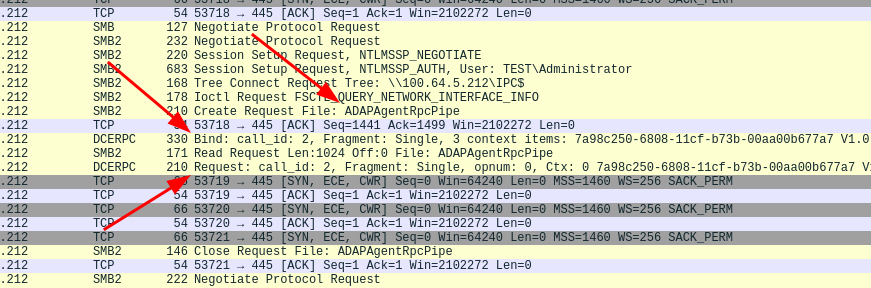
O.. M.. G.. it seems to work!
Summary
In this part of the research we successfully created a working RPC client
to interact with the ADAudit Agent. But we still don’t know what either Proc0,
Proc1 or Proc2 does. In part 2, we dig into reverse engineering of
the agent software in an attempt to find out what we actually can do with
our newly created client.
Support us by following our LinkedIn page and get notified when new research is published: https://www.linkedin.com/company/shelltrail
Follow this URL to read part 2: https://www.shelltrail.com/research/manageengine-adaudit-reverse-engineering-windows-rpc-to-find-cve-2024-36036-and-cve-2024-36037-part2/